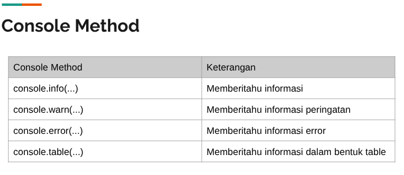

-
JavaScript memiliki fitur untuk melakukan logging bernama Console
-
Logging adalah mekanisme yang biasa dilakukan oleh programmer untuk
menampilkan informasi dari aplikasi yang sedang berjalan, tanpa harus
mengganggu alur kerja aplikasi dan juga interaksi user
-
Untuk melakukan ini, kita bisa menggunakan fitur Console di JavaScript
-
Untuk menggunakan Console, kita cukup gunakan perintah console di kode
JavaScript
